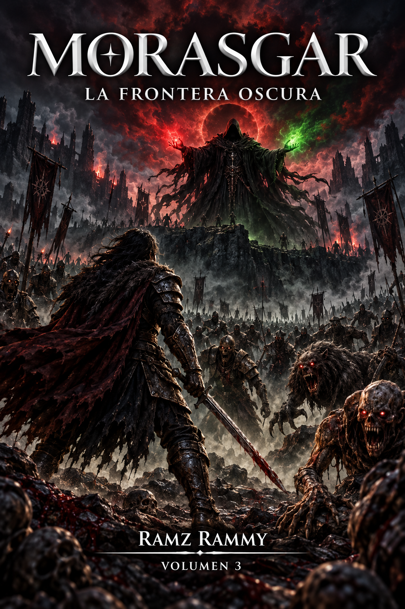

Morasgar
La Frontera Oscura
La paz nunca fue más que una pausa.
Tras los acontecimientos que cambiaron para siempre el destino de Morasgar, Lanser apenas comienza a comprender que algunas heridas del pasado nunca llegaron a cerrarse.
Una noche, un extraño sueño le revela el rostro de una joven que aún no conoce: una muchacha de quince años, hija de un legado que mezcla la sangre de los Vaelori con una magia que nadie debería poseer. Su poder es inestable, salvaje y peligroso. Y una pregunta atraviesa el sueño como una advertencia: ¿por qué su padre nunca volvió?
Pero mientras Lanser busca respuestas, algo mucho más antiguo despierta al otro lado de Morasgar.
En las profundidades de las minas de Nivaldar, los hombres descubren una conexión con la Frontera Oscura, una tierra donde la muerte dejó de obedecer sus propias leyes. Una grieta olvidada vuelve a abrirse y, desde sus entrañas, una antigua amenaza comienza a reunir un ejército.
Vorath, el Devorador de Eras, ha regresado.
Decenas de miles de espectros permanecen enterrados bajo un lago olvidado, esperando la llamada de aquel que pretende levantarlos para formar una legión que no puede morir.
Ahora Lanser y su manada deberán regresar a un mundo que apenas comenzaba a reconstruirse y enfrentarse a una amenaza que no busca conquistar Morasgar. Busca consumirlo.
La Frontera Oscura se ha abierto.